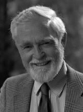

Please note: the AAS Obituaries are temporarily being hosted on this website while their full content is being ingested into the PubPub publishing platform newly adopted by the Bulletin of the American Astronomical Society. When the migration is complete, your existing links will take you to the final, migrated content. Contact peter.williams@aas.org with any questions.
Ronald N. Bracewell (1921-2007)
Ronald N. Bracewell, Professor Emeritus (since 1991) of Electrical Engineering at Stanford University, and a true renaissance man of science, died of a heart attack on 12 August 2007 at his home.
Ron Bracewell was born in Sydney, Australia, on 22 July 1921, one of the two sons of Cecil and Valerie Bracewell. He graduated from the University of Sydney in 1941 and received his doctorate degree in physics from Cambridge University in 1949. During World War II, Ron worked in the Australian National Radar Establishment, where he designed and developed microwave radar equipment. Like several other World War II radar scientists, after the war he used this experience to pioneer the new field of radio astronomy. With J. L. Pawsey, in 1955 he published the first comprehensive textbook in this field entitled, Radio Astronomy. Bracewell joined the Stanford Electrical Engineering faculty in 1955, and from 1974 on he held the first prestigious Lewis Terman professorship. He was awarded the Outstanding Service Award of the department in 1984. In 1988, he was named an officer of the Order of Australia--the Australian equivalent of Order of the British Empire.
Soon after his arrival at Stanford, Bracewell designed and began building a solar spectroheliograph, consisting of thirty-two dish antennas in the form of a cross. This was completed in 1961 and provided daily maps of the Sun for more than a decade encompassing more than one solar activity cycle of eleven years. These maps were useful in predicting magnetic storms caused by solar activity and were used by NASA during the first landing on the Moon. In 1971 he started the building of a five-element radio interferometer, for observation of extragalactic radio sources, with the novel design of unequal spacing that gave the resolution of a ten-element array. Both telescopes are now dismantled. The common characteristics of these and other projects were that they were all built in-house with a limited budget, often a small fraction of what a national laboratory would spend on a comparable project. As a result they provided an excellent arena for training future radio astronomers. Many prominent radio astronomers were indeed trained by Bracewell as graduate students or postdoctoral researchers.
An excellent example is the often-forgotten, simple-but-elegant experiment of the first detection of the dipole (or the so-called 24-hour) anisotropy of the then-recently discovered cosmic microwave background radiation. This was done by installing a small horn microwave antenna on top of the Durand building at Stanford, which scanned the sky once every 24 hours as the Earth rotated around its axis. The result of this experiment, incorporated in Dave Conklin's Ph.D. thesis, was instrumental in establishing the Big Bang origin of this radiation and provided the first measurement of the velocity of the Earth (and our Solar System and Galaxy) with respect to the fundamental rest frame of the universe defined by this radiation.
The techniques and mathematical algorithms that Ron developed for radio interferometry have been applied to medical imaging such as X-ray tomography for detecting tumors. Bracewell, not directly involved with such experiments, often acted as a consultant to medical practitioners.
Another outcome of Bracewell's research was a book published first in 1965 titled, The Fourier Transform and its Applications, which has become the gold standard of this subject and can be found in the personal libraries of many astronomers, engineers, physicists, and medical researchers. Many years ago, before an observing run at Kitt Peak, I needed to refer to this book. I looked for it in the shelves of the library at the National Optical Astronomical Observatory in Tucson, Arizona, but could not find it. The librarian informed me that the book had been signed out. I told her that this is a very useful book, and they should have more than one copy. She agreed and said that there were indeed eleven copies; all were in use by the resident astronomers.
A further interest of Ron was the discovery of and possible contact with extraterrestrial intelligent life. Early in his career he speculated on practical means of contacting "superior galactic communities," and in 1960 he suggested that the best way might be to send satellites into orbit around thousands of planetary systems within one-hundred light years of the Solar System, with the purpose of detecting radio signals that such communities are likely to produce. These ideas were further expounded in 1974 in a monograph entitled, "The Galactic Club." A more concrete and related contribution of Ron Bracewell was the method he suggested for the detection of extra-solar planets. A modified version of this method is planned for the detection of small planets from space platforms.
Another passion, deeply rooted in his early-life experimenting with nature in rural Sydney, was Ron's love of anything arboreal. Soon after his arrival at Stanford, he began the classification of trees on campus and later he taught a course entitled "I Dig Trees." In 2005, he published a book entitled Trees of Stanford and its Environs, a 300-page volume cataloging 350 species of trees.
With his highly curious mind and keen sense of observation, Ron always had a new puzzle or a problem at hand to engage everyone at every encounter. He posed them with a sense of humor and a mischievous twinkle in his eyes. He was highly sought out as a resident professor at Stanford's overseas campuses and was invited to be the presiding pundit or guru in many leisure and educational tours conducted by the university. In our annual Astronomy holiday parties Ron conversed with our post-doctoral fellows and visitors from different countries in their native tongues and charmed faculty and students alike with his anecdotes and stories. In other words Ron was the life of the party.
With his charm and gentle persuasion, Ron was instrumental in convincing Mr. James T. Bunyan, a life-long researcher at Stanford, to establish the annual Bunyan lecture series. His repeated recounting of his encounters with Mr. Bunyan remained interesting and amusing. Up to his last day you could find Ron in his office or in the corridors of the David Packard Electrical Engineering Building interacting with students and faculty. He continued to be an active member of the astronomy community at Stanford up to the end.
Professor Bracewell is survived by his wife of 54 years, Helen; by a son, Mark, of San Jose California; a daughter, Wendy, of London, England; a brother, Mark, of Melbourne, Australia; and two grandchildren.
I would like to thank emeritus professors Peter Sturrock, Anthony Fraser-Smith, and Von Eshleman for valuable advice and suggestions. The photograph is courtesy of Linda Cicero.
Obituary written by: Vahé Petrosian (Stanford University)
BAAS Citation: BAAS, 2009, 41, 566
SAO/NASA ADS Bibcode: 2009BAAS...41..566P